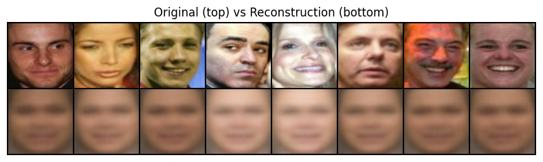

Lesson 5: Variational Autoencoders & Latent PCA
Learning Objectives
- Understand how the convolutional VAE in
projects/face_autoencoder/src/model.py encodes and decodes face images.
- Explain the reparameterization trick and the \(\beta\)-ELBO loss implemented in
VAELoss.
- Collect latent representations, run PCA, and use the Gradio sliders in
app.py to traverse interpretable directions.
Where the VAE Fits
We train a generative model that learns a smooth latent space of 64x64 RGB faces and supports interactive exploration.
digraph vae_flow {
rankdir=LR;
node [fontsize=11, shape=box, style=rounded];
images [label="Input faces\n(x) [64x64x3]"];
encoder [label="Encoder CNN\nstrided conv blocks"];
heads [label="Latent heads\nfc_mu & fc_logvar"];
sample [label="Reparameterize\nmu + sigma * eps"];
decoder [label="Decoder CNN\nConvTranspose + Tanh"];
recon [label="Reconstruction\n~x"];
pca [label="Latent PCA\nmetadata + sliders"];
images -> encoder -> heads -> sample -> decoder -> recon;
heads -> pca [style=dashed];
sample -> pca [style=dashed];
}
- The encoder compresses spatial structure; latent heads model a Gaussian posterior; the decoder mirrors the encoder.
- Latent samples feed both reconstruction training and the PCA analysis used later in the app.
Encoder Anatomy
- Four `_conv_block` stages progressively downsample 64 -> 32 -> 16 -> 8 -> 4 while increasing channels (32 -> 256).
- Each block: `Conv2d(stride=2)` + `BatchNorm2d` + `LeakyReLU(0.2)` for stable feature scaling and nonlinearity.
- A dummy tensor at init time infers the flattened dimension so we can support arbitrary image sizes.
self.encoder_cnn = nn.Sequential(
_conv_block(image_channels, base_channels),
_conv_block(base_channels, base_channels * 2),
_conv_block(base_channels * 2, base_channels * 4),
_conv_block(base_channels * 4, base_channels * 8),
)
h = self.encoder_cnn(x)
h = h.view(x.size(0), -1)
Latent Gaussian + Reparameterization
- Two linear heads (`fc_mu`, `fc_logvar`) map flattened features to the mean and log-variance of \(q_\phi(z \mid x) = \mathcal{N}(\mu, \mathrm{diag}(\sigma^2))\).
- `reparameterize` keeps gradients flowing by sampling \(\epsilon \sim \mathcal{N}(0, I)\) and computing \(z = \mu + \sigma \odot \epsilon\).
- `logvar` is stored instead of \(\sigma\) to ensure positivity via `torch.exp(0.5 * logvar)`.
def encode(self, x):
h = self.encoder_cnn(x).view(x.size(0), -1)
mu = self.fc_mu(h)
logvar = self.fc_logvar(h)
return mu, logvar
def reparameterize(self, mu, logvar):
std = torch.exp(0.5 * logvar)
eps = torch.randn_like(std)
return mu + eps * std
Decoder & Reconstruction Quality
- `decoder_input` projects each latent vector back to the 4x4xC tensor inferred from the encoder.
- Three `_deconv_block` stages mirror the encoder by doubling spatial size via `ConvTranspose2d` strides.
- A final `ConvTranspose2d -> Tanh` predicts RGB pixels scaled to [-1, 1]; downstream utilities denormalize for visualization.
def decode(self, z):
h = self.decoder_input(z)
h = h.view(z.size(0), self.enc_channels, self.enc_spatial, self.enc_spatial)
return self.decoder_cnn(h)
\(\beta\)-ELBO Loss
- Objective: maximize the Evidence Lower Bound \(\mathcal{L} = \mathbb{E}[\log p_\theta(x \mid z)] - \beta \; \mathrm{KL}(q_\phi(z \mid x) \Vert p(z))\).
- `VAELoss` uses `F.mse_loss` for the reconstruction term (faces are continuous) and a closed-form KL between diagonal Gaussians.
- Tuning \(\beta\) trades sharp reconstructions (low \(\beta\)) for more disentangled latents (high \(\beta\)).
recon_loss = F.mse_loss(output.reconstruction, target, reduction="mean")
kl_div = -0.5 * torch.mean(1 + logvar - mu.pow(2) - logvar.exp())
loss = recon_loss + beta * kl_div
Training Loop Helpers (training_utils.py)
- `seed_everything` and callbacks are small utilities that make VAE experiments reproducible and easy to monitor.
- Latent vectors \(\mu(x)\) collected from the encoder can be analyzed with PCA to find major directions of variation.
- A simple Gradio app can then expose a few PCA directions as sliders to explore the learned latent space interactively.
Case study (optional): inspect training_utils.py and app.py in the project for a concrete implementation of these ideas.
Plain Autoencoder (Deterministic)
A basic autoencoder compresses and reconstructs data without any probabilistic latent space.
digraph ae_flow {
rankdir=LR;
node [fontsize=11, shape=box, style=rounded];
x [label="Input image\nx"];
enc [label="Encoder\nConv / Linear layers"];
z [label="Latent code\nz"];
dec [label="Decoder\nConvTranspose / Linear"];
x_hat [label="Reconstruction\nx̂"];
x -> enc -> z -> dec -> x_hat;
}
- Train by minimizing reconstruction loss (e.g., MSE) between \(x\) and \(\hat{x}\).
- Latent code \(z\) is a deterministic function of \(x\) with no explicit prior.
- Works well for compression and denoising, but latent space may have gaps and is not guaranteed to be smooth.
Autoencoders on MNIST / Fashion-MNIST
Before VAEs, it is useful to build intuition with a small, deterministic autoencoder on simple 28x28 images.
- Datasets:
MNIST (digits) and Fashion-MNIST (clothing items).
- Goal: learn a compact latent code that can reconstruct inputs and optionally denoise simple corruptions.
- Architecture: 2–3 fully connected or convolutional layers in the encoder and a mirrored decoder.
class MnistAutoencoder(nn.Module):
def __init__(self, latent_dim=32):
super().__init__()
self.encoder = nn.Sequential(
nn.Flatten(),
nn.Linear(28 * 28, 256), nn.ReLU(),
nn.Linear(256, latent_dim),
)
self.decoder = nn.Sequential(
nn.Linear(latent_dim, 256), nn.ReLU(),
nn.Linear(256, 28 * 28), nn.Sigmoid(),
)
def forward(self, x):
z = self.encoder(x)
x_hat = self.decoder(z).view(-1, 1, 28, 28)
return x_hat
We will use this style of model for the homework on MNIST and Fashion-MNIST.
VAE vs Regular Autoencoder
Regular Autoencoder
- Encoder: \(x \to z\) (deterministic)
- Decoder: \(z \to \hat{x}\)
- Latent space: unconstrained; may be irregular with “holes”.
- Problem: sampling random \(z\) often lands off the data manifold → poor or meaningless generations.
Variational Autoencoder
- Encoder: \(x \to (\mu, \sigma)\) (probabilistic)
- Sample: \(z \sim \mathcal{N}(\mu, \sigma^2)\)
- Decoder: \(z \to \hat{x}\)
- Latent space: continuous, smooth, generative
VAEs learn a distribution over latents, enabling smooth interpolation and generation of new faces.
From Autoencoder Loss to VAE Loss
- Autoencoder objective: minimize reconstruction error only, e.g. \(L_{\text{AE}} = \mathbb{E}_{x}[\|x - \hat{x}\|^2]\).
- No explicit constraint on where latent codes \(z\) live → irregular latent space and poor samples from random \(z\).
- VAE objective: keep reconstruction term, but add a KL regularizer that pulls \(q_\phi(z \mid x)\) toward a simple prior \(p(z)\).
- This gives the Evidence Lower Bound (ELBO): \(\mathcal{L} = \mathbb{E}[\log p_\theta(x \mid z)] - \beta \, \mathrm{KL}(q_\phi(z \mid x) \Vert p(z))\).
VAE Generative Story
- Prior: choose a simple latent distribution \(p(z) = \mathcal{N}(0, I)\).
- Decoder: learn \(p_\theta(x \mid z)\) (e.g., Gaussian with mean given by a neural network) to reconstruct data from latent codes.
- Encoder: learn \(q_\phi(z \mid x)\) that maps each example to a latent Gaussian \(\mathcal{N}(\mu(x), \sigma^2(x))\).
- At test time we can either encode–decode (like an autoencoder) or sample \(z \sim p(z)\) and decode to generate new examples.
Step-by-Step: AE → VAE
Plain Autoencoder
- Input \(x\)
- Encoder outputs latent code \(z\)
- Decoder outputs \(\hat{x}\)
- Loss: reconstruction only (e.g., MSE)
- Sampling: ad hoc; random \(z\) may not decode to realistic data
Variational Autoencoder
- Input \(x\)
- Encoder outputs \((\mu(x), \log \sigma^2(x))\)
- Sample \(z = \mu + \sigma \odot \epsilon\), \(\epsilon \sim \mathcal{N}(0, I)\)
- Decoder outputs \(\hat{x}\)
- Loss: reconstruction + KL to prior → well-structured latent space
Homework: Train an Autoencoder on MNIST & Fashion-MNIST
- Implement a small PyTorch autoencoder (MLP or shallow CNN) for 28x28 grayscale images, following the
MnistAutoencoder pattern.
- Train on
MNIST until reconstruction loss plateaus; visualize a grid of original vs reconstructed digits.
- Repeat training on
Fashion-MNIST; compare what kinds of structure the model captures (edges, shapes, textures).
- Optionally add Gaussian noise to inputs and train a denoising autoencoder; report how this changes visual quality.
- Reflect: how does a deterministic autoencoder's latent space differ from the VAE latent space used in the face project?
Why Reparameterization Trick?
- Problem: sampling \(z \sim \mathcal{N}(\mu, \sigma^2)\) is non-differentiable
- Direct sampling breaks backpropagation: gradients can't flow through random operations
- Solution: separate randomness from learnable parameters
Without reparameterization:
# ❌ Can't backprop through this
z = torch.normal(mu, std)
# mu and std have no gradients!
With reparameterization:
# ✅ Gradients flow through mu, std
eps = torch.randn_like(std) # fixed noise
z = mu + eps * std
# Both mu and std are differentiable!
Key insight: \(\epsilon\) is sampled once and fixed; gradients flow through \(\mu\) and \(\sigma\).
Understanding KL Divergence
The KL term regularizes the learned posterior \(q_\phi(z \mid x)\) to match the prior \(p(z) = \mathcal{N}(0, I)\).
\[
\mathrm{KL}(q_\phi(z \mid x) \Vert p(z)) = \frac{1}{2} \sum_{i=1}^d \left( \sigma_i^2 + \mu_i^2 - 1 - \log \sigma_i^2 \right)
\]
- \(\sigma_i^2 + \mu_i^2 - 1\): penalizes large means and variances (pushes toward standard normal)
- \(-\log \sigma_i^2\): prevents collapse (keeps variance from going to zero)
- Without KL: encoder could map each \(x\) to a different region → no smooth latent space
- With KL: encoder learns to use a shared, structured latent space
\(\beta\)-VAE: Controlling Disentanglement
The \(\beta\) parameter in \(\mathcal{L} = \mathbb{E}[\log p_\theta(x \mid z)] - \beta \; \mathrm{KL}(q_\phi(z \mid x) \Vert p(z))\) controls the trade-off:
Low \(\beta\) (e.g., 0.1-0.5)
- Emphasizes reconstruction quality
- Sharper, more detailed outputs
- Less structured latent space
- Latent dimensions may be correlated
High \(\beta\) (e.g., 2-10)
- Emphasizes latent regularization
- More disentangled features
- Smoother, more interpretable latents
- May sacrifice some reconstruction quality
Standard VAE: \(\beta = 1.0\) (balanced). \(\beta\)-VAE: \(\beta > 1\) for better disentanglement.
Reconstruction Loss: MSE vs Log(MSE) vs Perceptual
MSE Loss (Standard)
- Pixel-wise squared error: \(\|x - \hat{x}\|^2\)
- Simple, fast, differentiable
- Problem: averages out details → blurry reconstructions
- Large errors dominate gradients

Example: MSE loss produces blurry, averaged reconstructions
recon_loss = F.mse_loss(
output.reconstruction,
target
)
Log(MSE) Loss (Alternative)
- \(\log(\|x - \hat{x}\|^2 + \epsilon)\)
- Reweights gradients: \(\frac{1}{\text{MSE}} \cdot \frac{\partial \text{MSE}}{\partial \theta}\)
- Large errors contribute less; small errors contribute more
- Often produces sharper results than standard MSE
- Valid alternative that sometimes outperforms MSE
mse = F.mse_loss(output.reconstruction, target)
recon_loss = torch.log(mse + 1e-8)
# Or: loss_func = VAELoss(beta=1.0, use_log_mse=True)
Reconstruction Loss: Perceptual Loss
Perceptual Loss (Enhanced)
- Feature-space error: \(\|f(x) - f(\hat{x})\|^2\)
- Uses pre-trained VGG features
- Better preserves facial structure and details
- Sharper, more realistic reconstructions
- Most computationally expensive option
# Compare VGG features instead
recon_features = vgg(x)
target_features = vgg(target)
perceptual_loss = F.mse_loss(
recon_features,
target_features
)
# Or use PerceptualVAELoss:
loss_func = PerceptualVAELoss(
beta=1.0,
feature_layer='relu3_3'
)
Summary: MSE (standard) → Log(MSE) (often better) → Perceptual (best quality, slower)
Perceptual Loss: VGG Feature Layers
Different VGG layers capture different levels of abstraction:
- relu1_2: Low-level (edges, colors) — too shallow for faces
- relu2_2: Mid-early (textures, patterns) — good detail preservation
- relu3_3: Mid-level (object parts, facial structures) — recommended for 64-96px faces
- relu4_3: High-level (semantic features) — may lose spatial detail for small images
# In PerceptualVAELoss
loss_func = PerceptualVAELoss(
beta=1.0,
perceptual_weight=1.0,
mse_weight=0.1, # Optional: hybrid approach
feature_layer='relu3_3' # Best for faces
)
For face images, relu3_3 balances structure preservation with detail.
Architecture Design Choices
Encoder
- Strided convolutions: Efficient downsampling (no pooling needed)
- BatchNorm: Stabilizes training, allows higher learning rates
- LeakyReLU(0.2): Prevents dead neurons, common in GANs/VAEs
- Progressive channels: 32→64→128→256 captures hierarchical features
Decoder
- ConvTranspose2d: Learns upsampling (better than interpolation)
- Mirror structure: Symmetric to encoder for balanced capacity
- Tanh output: Maps to [-1, 1] matching normalized inputs
- No final activation: Could use sigmoid for [0,1], but Tanh works well
Training Considerations
- Learning rate: Start with 1e-3 to 2e-3; VAEs can be sensitive to LR
- Batch size: Larger batches (256+) help stabilize BatchNorm and gradients
- KL annealing: Start with \(\beta=0\), gradually increase to final value (helps early training)
- Latent dimension: Too small → information bottleneck; too large → underutilized capacity
- Monitoring: Watch both reconstruction loss (quality) and KL (regularization) separately
- Early stopping: Stop when validation loss plateaus; VAEs can overfit to training faces
# Example: KL annealing
for epoch in range(epochs):
beta = min(1.0, epoch / 50) # Ramp up over 50 epochs
loss_func.beta = beta
learn.fit_one_cycle(1, lr_max=lr)
Why PCA on Latent Space?
- Interpretability: PCA finds orthogonal directions of maximum variance
- Dimensionality reduction: First few components capture most variation
- Controllable generation: Each component often corresponds to a semantic attribute (smile, pose, lighting)
- Linear interpolation: Moving along a component is smooth and predictable
PCA Components:
- PC1: Often captures pose/angle
- PC2: Often captures expression
- PC3: Often captures lighting
- PC4+: More subtle variations
Explained Variance:
- First 8 components: ~60-80% variance
- First 16 components: ~85-95% variance
- Remaining: fine details
Latent Space Properties
- Smoothness: Nearby points in latent space → similar faces (enabled by KL regularization)
- Completeness: Most of latent space decodes to valid faces (not just training examples)
- Interpolation: Linear paths between latents produce smooth face morphing
- Arithmetic: Can do "smiling face - neutral + angry" = new expression (if disentangled)
# Example: Interpolation
z1 = model.encode(face1)[0] # mu for face1
z2 = model.encode(face2)[0] # mu for face2
for alpha in [0.0, 0.25, 0.5, 0.75, 1.0]:
z_interp = (1 - alpha) * z1 + alpha * z2
face_interp = model.decode(z_interp)
# Smooth morphing between faces!
Common Issues & Solutions
Problem: Blurry Reconstructions
- Try perceptual loss instead of MSE
- Reduce \(\beta\) (less KL pressure)
- Increase model capacity (more channels)
- Check if latent dim is too small
Problem: Posterior Collapse
- KL → 0, encoder ignores input
- Increase \(\beta\) gradually
- Use KL annealing
- Check decoder isn't too powerful
Problem: Training Instability
- Lower learning rate
- Gradient clipping
- Warm-up period
- Check data normalization
Problem: Poor Latent Structure
- Increase \(\beta\) for disentanglement
- Use \(\beta\)-VAE (\(\beta > 1\))
- Train longer
- Check KL term is active
Next Steps
- Reproduce the training pipeline in
projects/face_autoencoder/face_autoencoder_training.ipynb and compare \(\beta\) values.
- Experiment with different latent dimensions or `base_channels`, and observe how PCA variance ratios change.
- Try
PerceptualVAELoss instead of VAELoss and compare reconstruction quality.
- Extend the Gradio app with preset buttons (e.g., "add smile", "turn head") by saving curated coefficient vectors.
- Implement latent interpolation: encode two faces, interpolate in latent space, decode to see morphing.
- Optional: try ICA or t-SNE on the collected latents to contrast with PCA's linear assumptions.